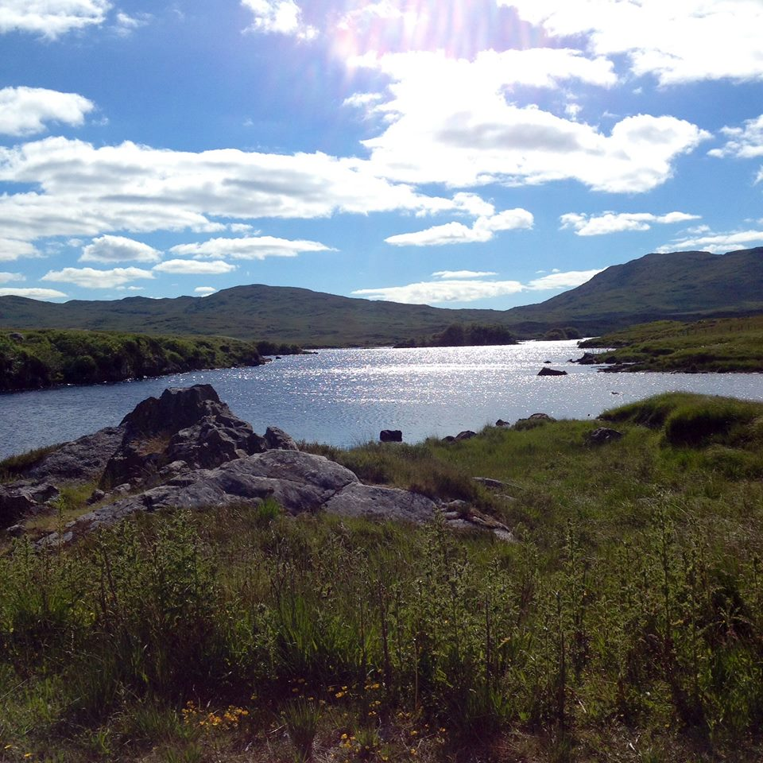
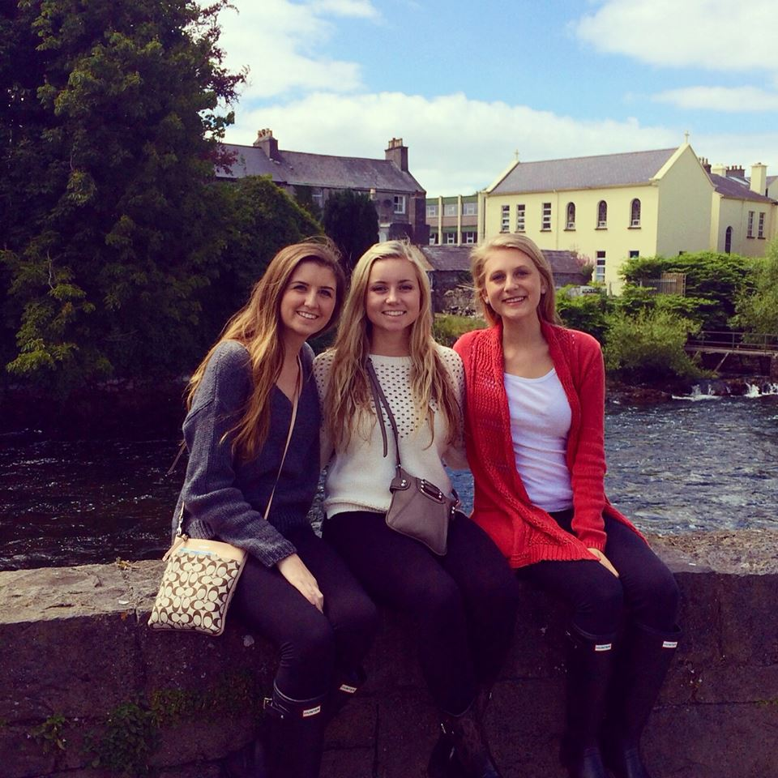
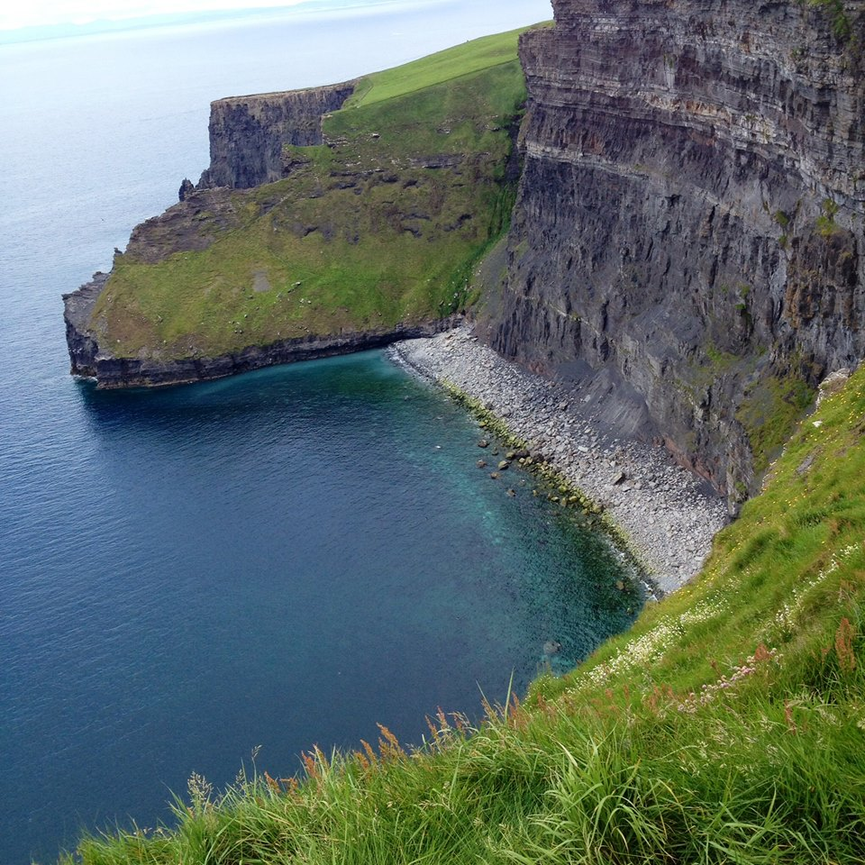

For my project, I wanted to use this page to tell you about myself and what I enjoy most.
I am from Wilmington, Delaware and I am attending college at the University of Georgia. I spent the first 14 years of my life living in Maryland. I attended the same school from kindergarten to eighth grade. After only going to school with the same 35 people for my entire life, I decided I needed a change. My family moved to Delaware and I began attending an all-girls Catholic high school. I enjoyed my high school years but when it began time to choose a college, I decided to go far, far away from home.
I'd like to include some fun facts about myself. In the table below, I've listed some of my favorite things!
| My favorite... | |
|---|---|
| Movie | Titanic |
| TV Show | The Office |
| Food | Chicken Tenders |
| Sport (to watch) | Football |
| Sport (to play) | Lacrosse |
| Band | Blink-182 or The Lumineers |
| Place | Ireland |
Speaking of my favorite place...I'd like to talk about the trip I took to Ireland almost three years ago. It was one of the best weeks of my life. Three of my best friends from high school and I all signed up for this school trip. We took a bus all over the country, visiting every major tourist attraction!

The only bad thing about the trip was our terrible tour guide. She got us lost more than once and only talked about her career as an artist. However, it has become sort of an inside joke amongst my group of friends. If you'd like to see some of her art, click on the four-leaf clover!
Besides my week in Ireland, the most fun I have ever had has been at Firefly Music Festival in Dover, Delaware. I am such a huge fan of all types of music. This festival has always been the perfect place for me to spend time with all of my friends and see my favorite artists. Last year, my favorite performances were by Mumford & Sons and A$AP Rocky. If you click here, you can see this years and past years lineups!
Firefly Live Review
"...so too has Firefly become woven into the fabric of Delaware and of the early summers of so many music lovers, young and old. It’s become a place where people can express themselves with swirling body paint and statement attire, and to connect with others through music..."
I hope this page gave you some insight into who I am. I also hope you enjoyed hearing about some of my favorite experiences!